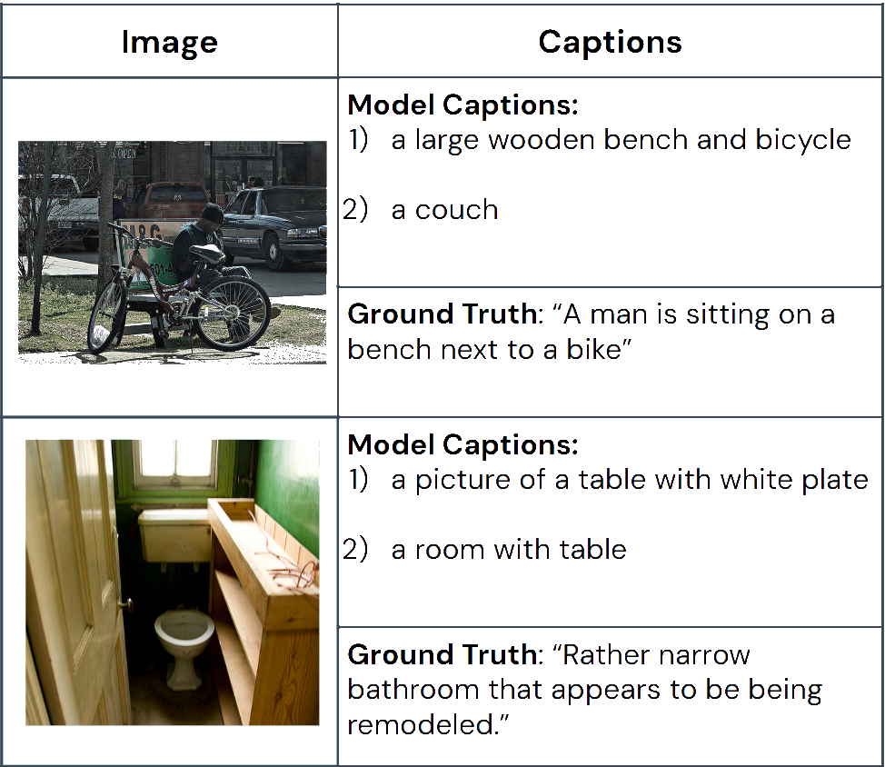

Authors
Procedure
Results
Using Visual Transformers to Enhance Descriptions of a Scene for Blind and Visually-Impaired People
Research Website with Bootstrap
Introduction
Problem: Millions of visually impaired and blind people struggle to understand their surroundings due to visual limitations.
Current Research: Most researchers use convolutional neural networks as their vision model in vision-language systems
Contributions: Rather than using a convolutional neural network, a visual transformer was used
Visual Transformers can give importance to specific pixels unlike convolutional neural networks.
They can also relate spatially distant objects in an image.
Experiment
Research Question: Can image-analyzing transformers improve image captioning for blind and visually impaired individuals?
Hypothesis: The inclusion of visual transformers would enhance captioning technology for blind users.
Methods
A vision model processes image data.
A language model generates text descriptions from the output of the vision model.
The model's performance was evaluated using the BLEU (Bilingual Evaluation Understudy) score.

Results
The proposed model did not outperform state-of-the-art (SOTA) models in any metric.
Qualitative analysis indicated inaccuracies in generated captions.
Numerous reasons for low accuracy:
Model was extremely small compared to the State of the Art (SOTA)
The hardware used to train was not very powerful, leading to slower training times and less training overall.
There may have been bugs in the model architecture.